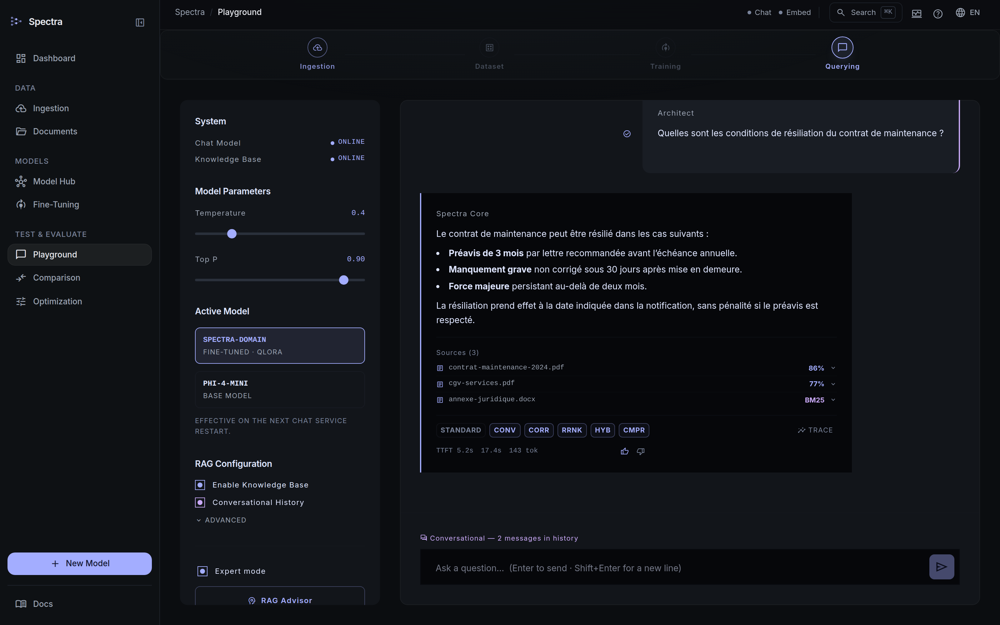
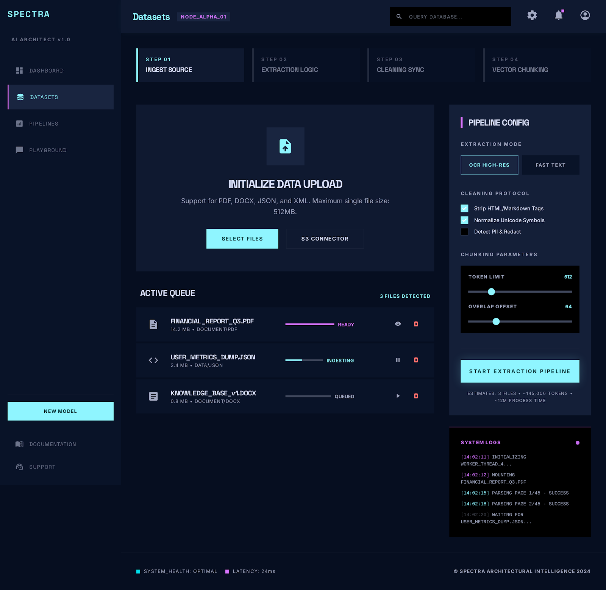
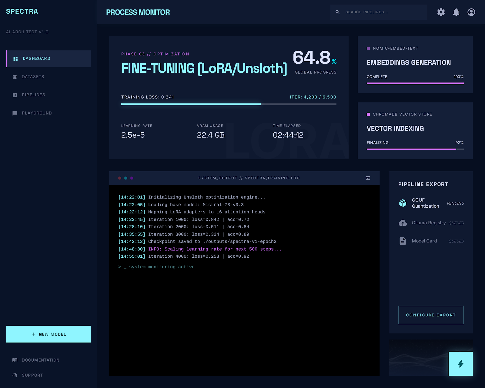
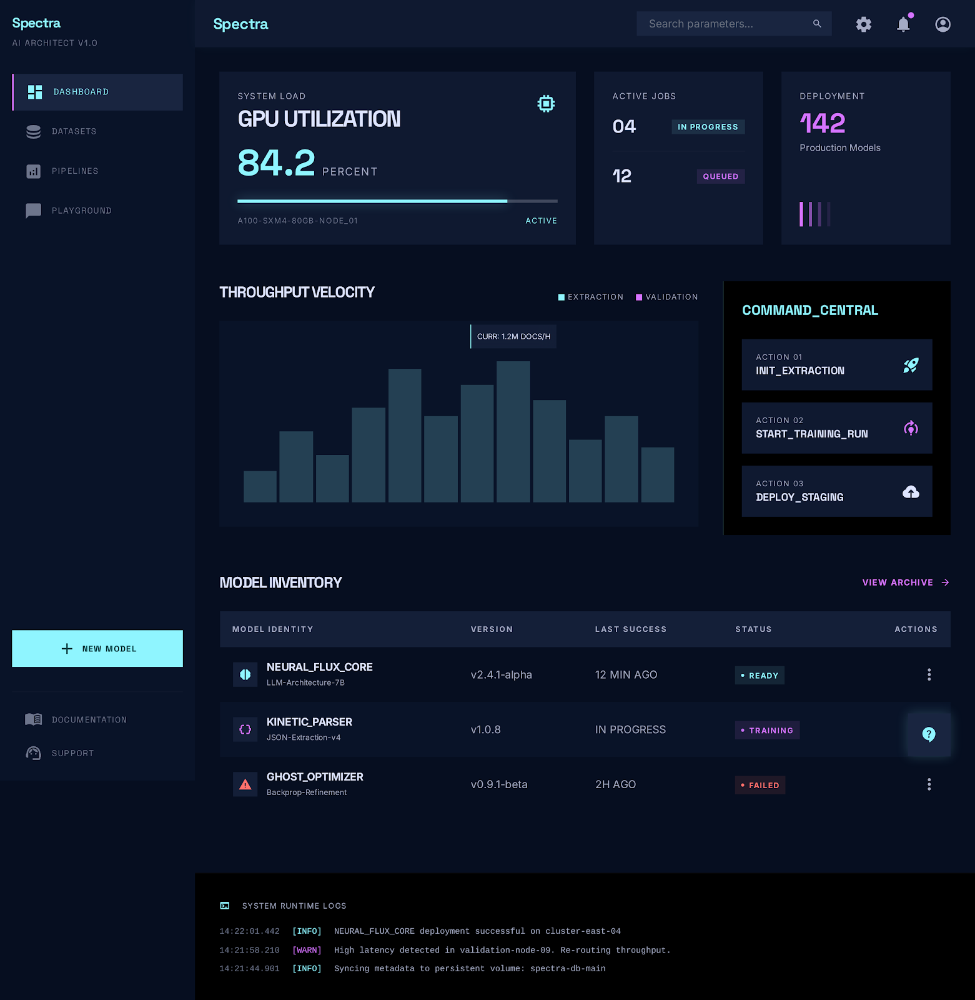

Des réponses sourcées
Le RAG retrouve les passages pertinents de vos documents pour étayer les réponses.
IA locale · Open source
Transformez votre documentation métier en un assistant spécialisé. Recherchez des réponses sourcées et affinez votre modèle sur votre infrastructure.

01 / Le projet
SpectraLLM construit un assistant spécialisé à partir de votre documentation interne.
Le RAG retrouve les passages pertinents de vos documents pour étayer les réponses.
Le fine-tuning QLoRA adapte le modèle à votre vocabulaire et à vos usages métier.
Les documents et les modèles peuvent rester sur votre infrastructure.
02 / Ingestion
Transformation des PDF complexes en Markdown via IBM Docling ou PyMuPDF4LLM pour préserver la structure (tableaux, titres).
Normalisation Unicode, suppression des en-têtes/pieds de page, correction OCR et nettoyage des tableaux ASCII.
Découpage intelligent en morceaux de 512 tokens avec fenêtre glissante de 64 tokens pour ne jamais perdre le contexte.
Conversion du texte en vecteurs mathématiques via Nomic Embed, stockés dans ChromaDB pour une recherche instantanée.

03 / Recherche
La recherche associe la proximité sémantique à la précision des mots-clés.
Combine la Recherche Vectorielle (sens) et BM25 (mots-clés) via Reciprocal Rank Fusion pour un équilibre parfait entre sens global et précision technique.
Un modèle IA expert analyse en profondeur les 20 meilleurs candidats pour ne conserver que les plus pertinents avant la génération.
Pour les questions complexes, Spectra active une boucle de raisonnement : le LLM peut décider d'effectuer plusieurs recherches affinées successives.
04 / Fine-tuning
Génération automatique de paires Q&A et DPO à partir de vos documents avec garde de qualité Jaccard.
Entraînement ultra-rapide sur des "modules de mémoire" (LoRA) pour une efficacité maximale sur matériel local.
Évaluez les réponses pour alimenter un nouvel entraînement et affiner les préférences du modèle.

05 / Architecture
Spectra analyse le CPU, la RAM et le GPU au démarrage pour ajuster les threads, les couches GPU et la taille du contexte de llama-server.
GET /api/status
{
"services": [
{ "name": "llama-cpp", "available": true },
{ "name": "llm-embed", "available": true },
{ "name": "chromadb", "available": true }
]
}
Traduction d'un texte en une liste de nombres représentant son sens sémantique.
Algorithme de recherche par mots-clés (statistiques sur la fréquence des termes).
Méthode mathématique pour fusionner deux classements différents (Vecteur + BM25).
Modèle IA expert qui compare précisément une question et un document pour les trier.
Méthode d'entraînement ultra-efficace qui ne modifie que quelques paramètres du modèle.
Stratégie où l'IA alterne entre réflexion et action (recherche documentaire).
06 / Écosystème
Chaque projet fonctionne de façon autonome. Ils peuvent aussi être lancés ensemble à partir des images Docker publiées.
Explorer Kafka, l'interroger en Flink SQL, l'auditer avec l'IA — et le servir aux agents en serveur MCP en lecture seule. Peut prendre Spectra comme fournisseur de LLM privé.
compagnonsdudev/kafkaexplorer · AGPL-3.0Recherche RAG locale, fine-tuning et MCP en lecture seule. Les agents peuvent retrouver un passage, relire la révision citée et parcourir le document. Sur une instance partagée, chaque clé peut être limitée à ses collections.
compagnonsdudev/spectrallm · AGPL-3.0Un agent IA gouverné qui agit par des outils MCP — il lit Kafka par l'Explorer et cherche dans vos documents par Spectra, sous supervision humaine.
compagnonsdudev/kex-agent-ai · GPL-3.0git clone https://github.com/devdownin/Kafkaexplorer.git && cd Kafkaexplorer
docker compose -f compose/spectra-hub.yml -f compose/spectra-hub.mcp.yml \
-f compose/ecosystem.yml up -dPorts utilisés · 8080 Kafka SQL Explorer · 8081 Kex-anHarness · 8088 / 8089 interface / API Spectra · 9092 Kafka.